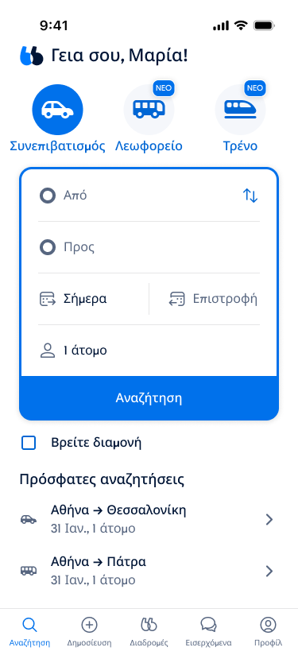

01 / International expansion
Designing the system behind
twenty new markets.
I designed and built the localization systems for BlaBlaCar’s expansion into twenty new countries. The challenge reached beyond translating a catalogue: the product kept changing, markets needed different approaches, and quality had to remain manageable in languages I don’t speak.

Design the inputs
I researched the markets, recruited and briefed linguists, and turned their expertise into terminology, instructions and examples the systems could use.
Choose the right route
Some markets needed new translations; others could inherit and adapt existing language. Where regional grammar and voice needed more, I built a dedicated process instead of forcing every country through the same workflow.
Keep the product current
I connected the initial catalogue work to continuous updates, with separate translation and quality checks, recovery from interruptions, and delivery back into the product’s content system.
Give every review more than one use
I designed review around real app screens and the content that mattered most. A finding could then improve the reviewed text, matching problems elsewhere, and the instructions used for future translations.
- 01Correct the reviewed content
- 02Apply the finding elsewhere
- 03Improve future guidance
Beyond the launch, these language practices have been recommended internally as a reference for other teams.
My role: research, workflow and system design, AI implementation, review design, launch and ongoing delivery.